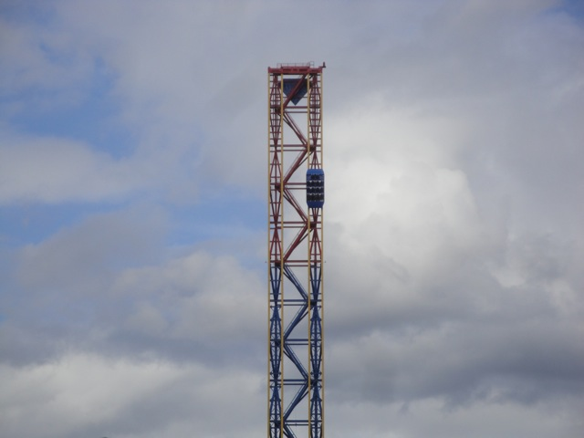
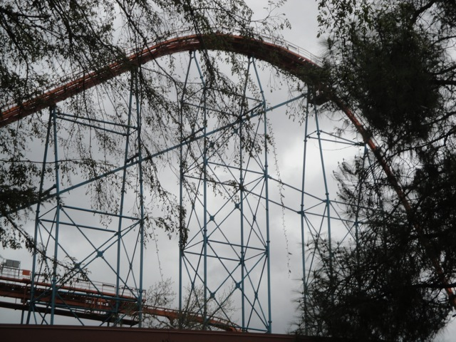
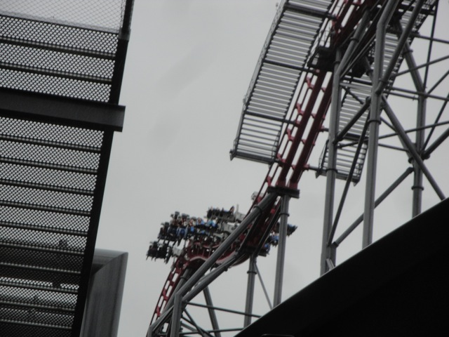
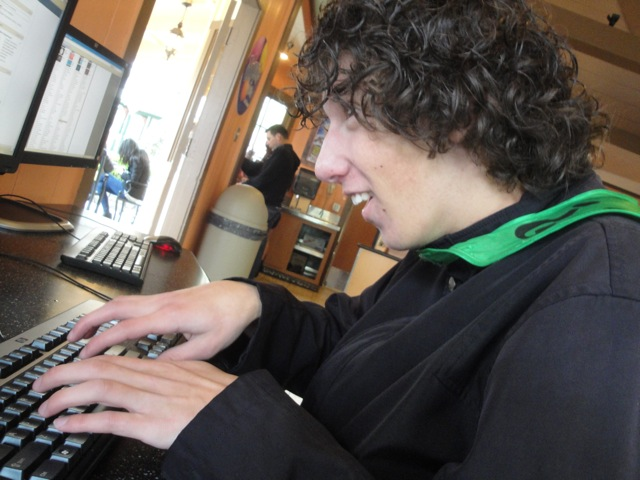

Superman Soft Opening
Well, I wasn't planning on heading back to Six Flags Magic Mtn until Westcoast Bash. But on Wednesday, I got an email that said that Superman was having a Technical Rehersal over the weekend and realized that I simply HAD to go. So we headed on over to Magic Mtn on Saturday to check it out despite the weather reports. And here we are waiting for Superman to open.
We get a sneak peek on Superman and you don't because we're special. =)
Sweet!! We're about to see just how Superman Backwards really is.
Ooh. Nice Cars.

It looks like there's a giant Tylonel on the track.
Sweet!! We were able to get a second ride in!!! =)
 If you want to know just how Backwards Superman was, check out our now updated Superman Review.
If you want to know just how Backwards Superman was, check out our now updated Superman Review.
 All right. Time to ride something else. Goliath sounds pretty good.
All right. Time to ride something else. Goliath sounds pretty good.

Hmm. It was running decently.
 We were going to eat at Johnny Rockets, but it was just so damn expensive that we decided to just eat over at the Waterfront.
We were going to eat at Johnny Rockets, but it was just so damn expensive that we decided to just eat over at the Waterfront.
KICKASS!!!!!!!! I totally 100% support this as a replacement to Longhorns. =)

It looks like just an ordinary kickass ride on X2, but it's not. What could be making it even better?
It's raining outside!!!! Yep, we marathoned X2 in the rain!!!! And it kicked major ass!!!!!!
Hello Rain. You made for some very awesome rides on X2.

"Oh Crap!!! I can't type!!! My fingers are frozen!!!"
 We heard from a certain someone that Terminator...I mean Apocolypse is slow and rough in the rain. So we had to see if that was true. It was a little rougher, but I still found it to be an awesome ride.
We heard from a certain someone that Terminator...I mean Apocolypse is slow and rough in the rain. So we had to see if that was true. It was a little rougher, but I still found it to be an awesome ride.
Why is Atom Smasher in peices over by Scream? (Oh, Scream in the rain HURTS!!!!! You just keep begging to go upsidedown so you aren't pelted in the face.)
Oh crap!!! The rain picked up!!! At this point, it's a f*cking downpour.
 So why not head over to X2 so we can see how it is in a downpour.
So why not head over to X2 so we can see how it is in a downpour.
Hey SFMM Facebook Fans bitching about how Six Flags Magic Mtn never operates anything in the rain, they were running not only X2, but most of their other rides in this downpour. So quit bitching and give credit where it's due.
At this point, we had enough and wanted to just get out of the rain.
Well we rode Superman Backwards and marathoned X2 in the rain. I'd call this a successful day.
Home